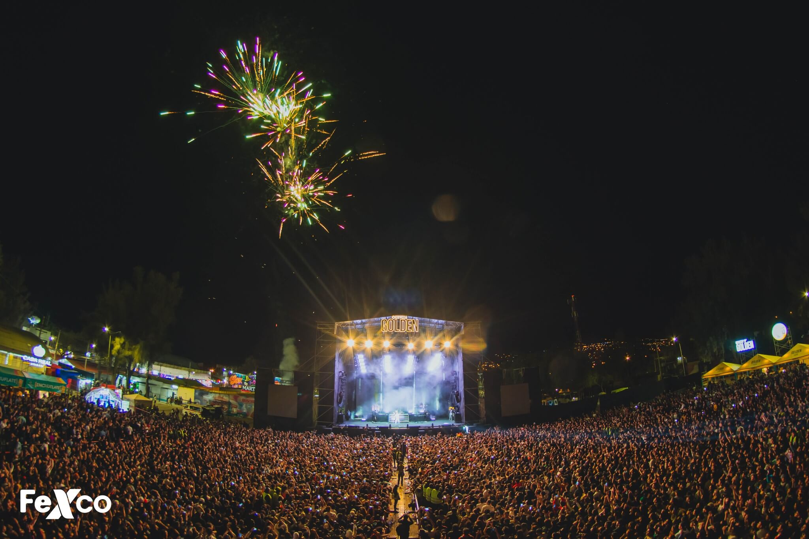
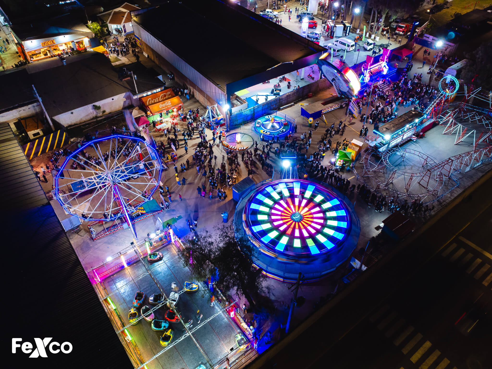
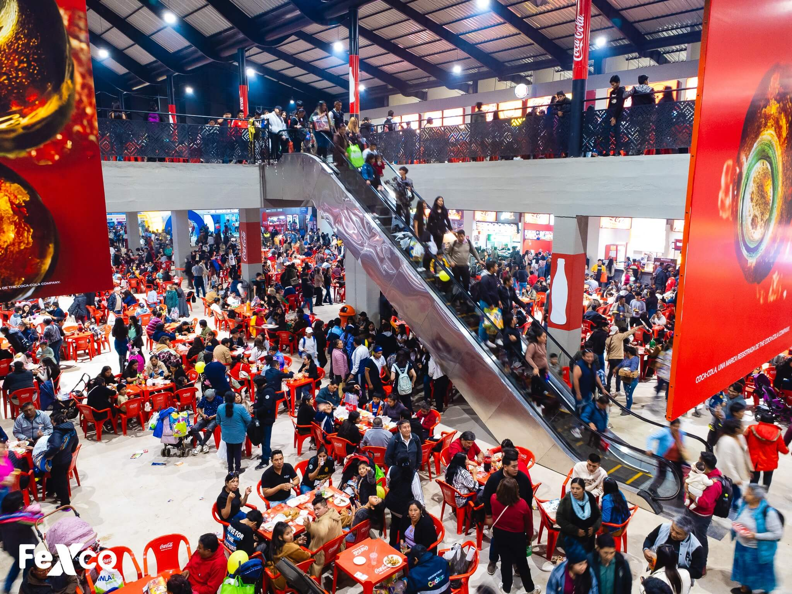
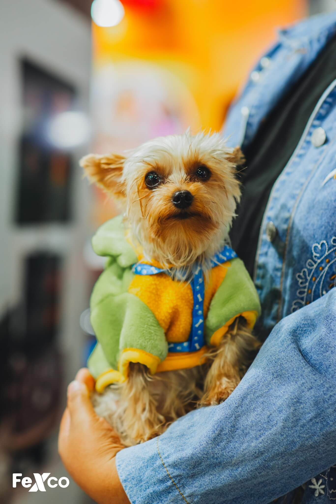

¿Qué es FEXCO?
Es una institución que organiza diferentes eventos en el Recinto Ferial Alalay de Cochabamba, Bolivia. Su misión es fomentar el desarrollo económico, comercial y cultural mediante exposiciones y ferias que impulsan la economía local y nacional.
Feria Exposición Internacional de Cochabamba
Gracias al alcalde Manfred Reyes Villa en fechas de inicios del año 2023 en instalaciones de la Alcaldía de Cochabamba, nació el nuevo nombre de la feria anual, aquella que solía llamarse Feria Internacional de Cochabamba y coloquialmente conocida como FEICO. Desde ese año, el evento que se denominará Feria Exposición Internacional de Cochabamba" (FEXCO).
OFRECEMOS ESPACIOS DISEÑADOS PARA OFRECER UNA EXPERIENCIA COMPLETA Y SATISFACTORIA.
Conciertos
Espacios para que puedas disfrutar de tus artistas que pueden ser invitados para brindar gran espectáculo en días especiales.
Parque de Diversiones
Un parque de diversiones contando con variadas atracciones para que tú puedas escoger en cuál divertirte y pasarla bien.
Plaza de Comidas
Nuevo espacio para poder brindarte un espacio con tus productos favoritos entre esos comidas saladas, postres y más.
Miss Fexco
Tenemos pasarelas con grandes profesionales bolivianas en el modelaje que demuestran su trabajo a través de una competencia para ser la Miss Fexco de cada gestión.
Somos Pet Friendly
Nosotros también pensamos en tus peluditos, es por eso que la feria es un ambiente pet friendly. Tu mascota puede ser parte también de este gran evento anual.